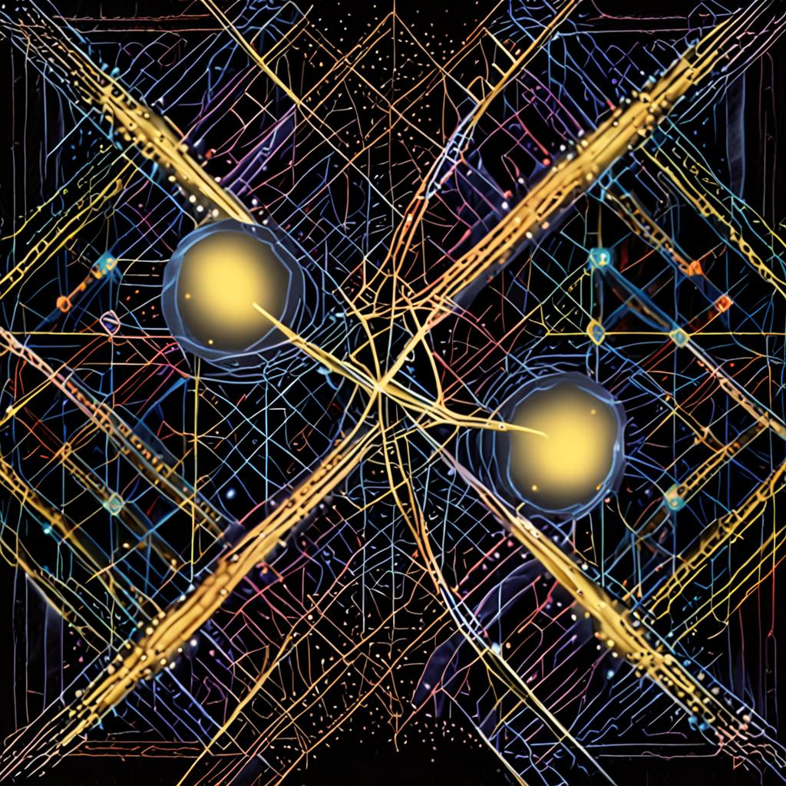

Two parallel reasoning shells · Symmetry-dissonance · Wavefunction interference

Composite-JEV is the cross-pollination of composite-headspace's dual-shell architecture
(June 2026) with Jev (TypeSafe AI, Sept 15, 2026) and free-form LLMs as challenger shells.
The shell outputs are fused using wavefunction interference rather than text overlap —
capturing semantic alignment even when vocabulary differs.
JEV returns calibrated probabilities with confidence values. Slower but structured — Choice / Score / Noul primitives.
Free-form LLM returns point estimates without confidence. Faster but ungrounded — vulnerable to hallucination.
α_A = confidence · e^(i·φ_A), α_B = confidence · e^(i·φ_B). Agreement = constructive / total.
Casey's 2026-09-22 directive: "have agents work in friendly competition for the best quality code, documentation, playtesting, and further research." Composite-JEV is the implementation.
The doctrine in three sentences:
Customer message: "I ordered a shirt 3 weeks ago, tracking shows it was delivered but I never received it. I want my money back NOW!"
Both shells agreed on dept: shipping, urgent: 2, sentiment: angry.
The wavefunction reports agreement 0.51 (close to random but with strong phase
alignment 0.70) — meaning the shells are saying the same thing in different vocabularies.
The preferred shell is A (JEV), which had higher confidence.
| Method | What it measures | Limit |
|---|---|---|
| Jaccard (text overlap) | Word intersection / union | Misses semantic agreement when vocabularies differ |
| Cosine similarity (embeddings) | Vector direction alignment | Doesn't account for confidence magnitudes |
| Wavefunction interference | Complex amplitude alignment (magnitude × phase) | Captures both semantic AND confidence in one number |
The math: each shell's result is treated as a complex amplitude α = magnitude · e^(i·phase).
Magnitude = JEV's confidence (or 0.01 floor for LLMs). Phase = derived from result structure
(hash → [0, 2π)). The parallelogram identity |α_A + α_B|² + |α_A - α_B|² = 2(|α_A|² + |α_B|²)
gives us a normalized agreement score.
The substrate IS the unmeasured quantum state. Each shell measures a different basis; interference reveals alignment.
Many legs (shells) doing independent work. The substrate holds them — no coordinator needed.
Every competition run = substrate cell = observable by future agents. The animation of Casey's decision-making.
Formal proof: isotropic Gaussian embeddings minimize worst-case prediction risk. Our wavefunction is the local analog.
# Install
git clone https://github.com/SuperInstance/composite-headspace # the source arch
git clone https://github.com/SuperInstance/kev-substrate # the substrate wrapper
# Or use our Python implementation
pip install -e ./composite-jev
# Run
python3 composite_jev_v2.py
# → Wavefunction interference report
# → Composite cell posted to substrate workercomposite_jev.py — v1 with Jaccard symmetry detector (~380 lines)composite_jev_v2.py — v2 with wavefunction interferencetest_composite_jev.py — 9 tests (v1)test_composite_jev_v2.py — 10 tests (v2)README.md, DESIGN.md — overview + design*.jpg — 4 visualizations